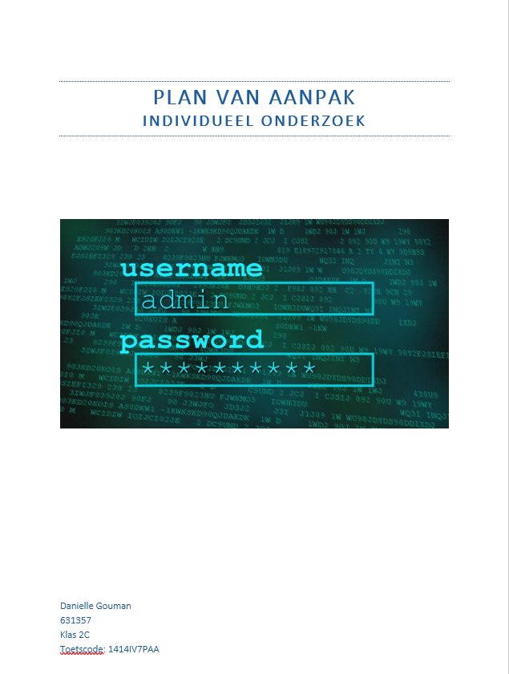

Cybercriminaliteit
In het tweede jaar van de opleiding Integrale Veiligheidskunde heb ik zelfstandig onderzoek gedaan naar een vorm van criminaliteit. Hierbij heb ik gekozen voor het onderwerp password cracking. Bij het onderzoek zijn relevante theorieën in acht genomen, en zijn de statistieken rond deze vorm van cybercrime bekeken. Uit het onderzoek zijn conclusies getrokken en heb ik de huidige maatregelen beoordeeld. Van deze opdracht heb ik geleerd een volledig onderzoek te schrijven, waar alles zelfstandig uitgevoerd moest worden. Ook heb ik met dit onderzoek een begin gemaakt met mijn kennis over het statistiek programma SPSS.